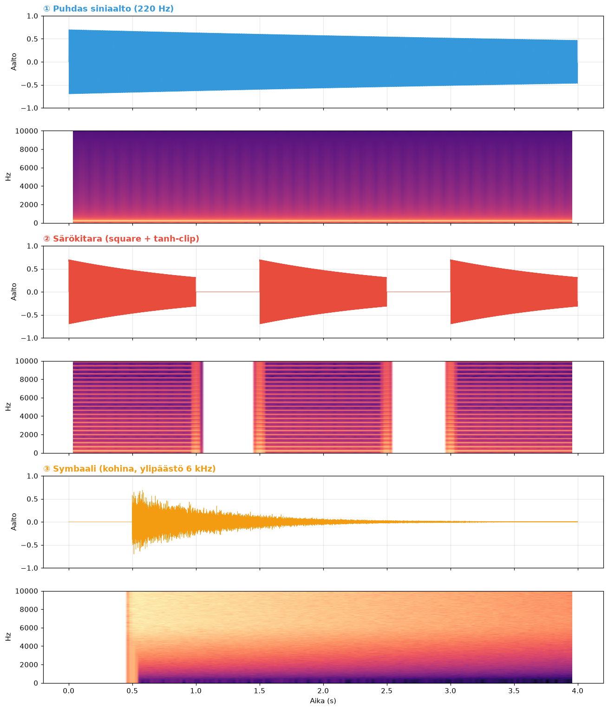
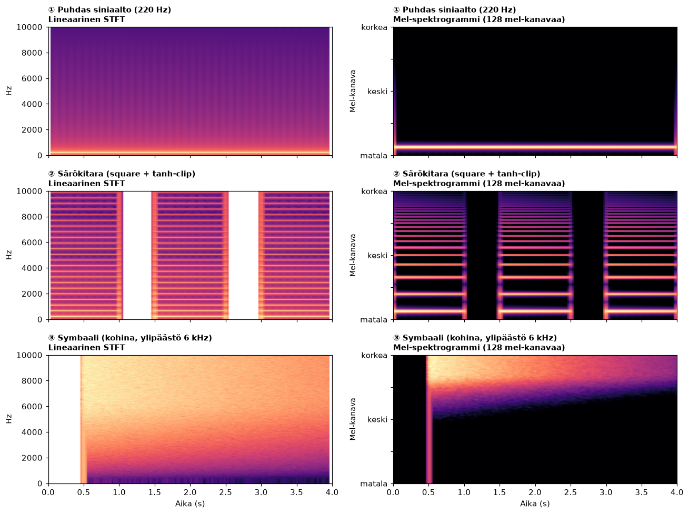

Oppitunti 0003 · AI-musiikin tuotanto · ~15 min + ääniharjoitus
Ydinajatus: oppitunnissa 0002 opit tunnistamaan elementtejä. Nyt opit miksi ne näyttävät siltä — ja miten voit lukea äänestä paljon enemmän kuin "tämä on basso". Tämä on taito, joka erottaa sinut ihmisistä, jotka vain kuuntelevat.
1. Kolme ääntä, kolme sormenjälkeä
Alla on kolme synteettistä ääntä. Jokainen on rakennettu matemaattisesti tarkasti, jotta tiedämme tasalleen mitä spektrogrammissa pitäisi näkyä — ja voit sitten verrata sitä siihen, mitä kuulet.
1Puhdas siniaalto · 220 Hz
Matemaattinen muoto:y(t) = A · sin(2π · 220 · t) — vain yksi taajuus, ei mitään muuta.
Spektrogrammissa näkyy: yksi ohut vaakaviiva 220 Hz kohdalla, ei mitään muualla. Tämä on referenssi — jokainen muu ääni "vertaa itseään" tähän.
Spektrogrammissa näkyy: useita vaakaviivoja 220, 660, 1100, 1540, 1980, 2420 Hz kohdilla — harmoninen sarja. Mitä enemmän säröä, sitä enemmän ylätaajuuksia ja sitä "tiheämpi" spektrogrammi.
3Symbaali · kohina + ylipäästö 6 kHz
Matemaattinen muoto: valkoista kohinaa (satunnaista, kaikkia taajuuksia), suodatettuna niin että vain yli 6 kHz pääsee läpi (ylipäästösuodin), eksponentiaalisesti vaimenee.
Spektrogrammissa näkyy: leveä vaalea alue ylhäällä, ei viivoja — kohina ei ole järjestäytynyttä. Vaimenee vasemmalta oikealle, koska isku tapahtuu 0.5s kohdalla.
2. Visuaalinen vertailu
Tässä kaikki kolme vierekkäin, jotta voit nähdä erot selvästi:

Tyyppi
Spektrogrammi näyttää
Syy
Puhdas siniaalto
Yksi kapea viiva
Vain yksi taajuuskomponentti
Särökitara
Useita viivoja harmonisesti
Square-aalto = harmoninen sarja
Symbaali
Leveä vaalea alue ylhäällä
Suodatettu kohina, ei taajuusrakennetta
3. Lineaarinen vai mel-spektrogrammi?
Toinen kysymys johon törmäät: miksi AI-musiikkimallit (varsinkaan diffusion-pohjaiset kuten Stable Audio) käyttävät usein mel-spektrogrammia tavallisen sijaan?
Vastaus on ihmisen kuuloaisti. Mel-asteikko on suunniteltu matkimaan sitä, miten korva erottaa taajuuksia:
0–500 Hz: erotamme taajuudet tarkasti (50 Hz hyppäys kuuluu selvästi)
4000+ Hz: karkeampi erotuskyky (tarvitaan useita satoja Hz)
Mel-spektrogrammi skaalaa taajuusakselin tämän mukaan: matalilla taajuuksilla on enemmän "tarkkuutta" (enemmän kanavia), korkeilla vähemmän. Tuloksena:

Mitä tämä tarkoittaa: mel-versiossa särökitaran harmoniset erottuvat alemmilla taajuuksilla paljon paremmin kuin lineaarisessa. Ihmiskorva kuulee ne eri tavalla — mel-spektrogrammi näyttää mitä korva oikeasti "kuulee".
4. Miksi tämä on kullanarvoinen taito AI-musiikissa
Kun kuuntelet AI-musiikkia ja jokin kuulostaa ohuelta, tukkoiselta tai lasimaiselta, mel-spektrogrammi kertoo miksi:
Ohut soundi → spektrogrammissa näkyy energiaa vain keskitaajuuksilla (500-2000 Hz), ei juurikaan bassoa eikä ilmaa (8-12 kHz)
Tukkoinen soundi → liikaa energiaa 200-500 Hz:ssä, tyypillinen merkki yliohjautuneesta masteroinnista
Lasimainen / kylmä soundi → liikaa energiaa 5-8 kHz:ssä, mahdollisesti AI:n lisäämä "kirkkausboosti" ilman inhimillistä harkintaa
"Märkä" soundi → transientit näkyvät pitkänä vanana eikä terävinä piikkeinä (overcompression)
Pro-vinkki: ennen kuin julkaiset AI-kappaleen, avaa se Sonic Visualiser'issa tai Audacityssa ja katso mel-spektrogrammia. Etsi "mustia aukkoja" (alueita joissa ei ole energiaa lainkaan) — ne ovat usein merkki siitä, että malli ei ole tuottanut tasapainoista lopputulosta.
5. Harjoitus
Valitse jokin seuraavista ja raportoi tulokset:
Avaa mikä tahansa oma kappaleesi Sonic Visualiser'issa (asenna jos ei ole) → katso mel-spektrogrammia → tunnista kolme aluetta: matalat (basso), keski (melodia/laulu), korkeat (symbaalit/ilma)
Generoi Suno-kappale → avaa samaan työkaluun → vertaa: onko AI-musiikin spektrogrammi "täyteläisempi" vai "ohuempi" kuin oman kappaleesi?
Lataa kolme esimerkkiääntä yllä → piirrä itse librosalla Pythonissa:
python3 -c "
import librosa, librosa.display, matplotlib.pyplot as plt
y, sr = librosa.load('reference/sound-guitar.wav')
mel = librosa.feature.melspectrogram(y=y, sr=sr, n_mels=128)
librosa.display.specshow(librosa.power_to_db(mel, ref=np.max), sr=sr, y_axis='mel', x_axis='time')
plt.colorbar()
plt.show()
"
📚 Lisäresursseja tekniseen syventämiseen
Jos haluat mennä pintaa syvemmälle spektrogrammien ja signaalinkäsittelyn maailmaan, nämä ovat parhaat löytämäni lähteet.
Interaktiiviset työkalut
Sonic Visualiser (ilmainen, Win/Mac/Linux) — paras standalone-työkalu spektrogrammien katseluun. Tukee myös mel-asteikkoa ja vertailuanalyysiä.
Chrome Music Lab — selaimessa toimivia pieniä kokeiluja (Sound Waves, Spectrogram, Oscillators)
Audacity + sen spektrogramminäkymä — yksinkertaisempi vaihtoehto Sonic Visualiser'ille
Suositus poluksi: jos sinulla on 2-3 tuntia, tee tämä järjestyksessä — (1) Chrome Music Lab Spectrogram -leikki, (2) Academo Spectrum Analyzer mikrofonilla, (3) Sonic Visualiser + oma kappaleesi, (4) librosa-tutorial Pythonissa. Neljä askelta, kukin noin 30 min, ja ymmärrät spektrogrammin loppuelämäksi.